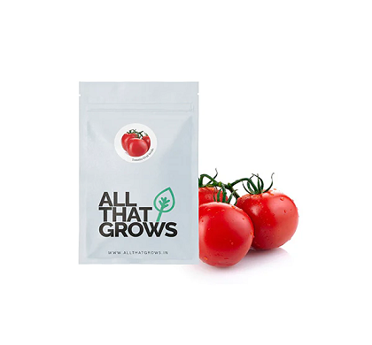

Tomato seeds
Specification
- SEED TYPE : Non-Hybrid, Open Pollinated And Non-GMO
- SOWING TIME : Summer As Well As Rainy Season
- ROOT SHAPE: Uniform Globe
- ROOT COLOR: Pure Deep Red
- FLESH COLOR: Dark Red Without Stripes
- FRUIT WEIGHT: 80 - 100 Grams
- SPECIFICATION: Sweet In Taste, Very Juicy, Non Pungent
- DAYS TO MATURITY: 80 - 90 Days After Sowing
SHOWING
TIME
AUG - OCT
SHOWING
DISTANCE

SEED TO SEED - 4"
LLINE TO LINE - 18"
FRUIT
WEIGHT
80-100 GMS
FRUIT
SHAPE

UNIFORM GLOBE
DAY TO
MATURITY
80-90 DAYS
AFTER SOWING
TRANSPLANTING
Apple Gourd, Indian Round Gourd, Indian Baby Pumpkin, or better known as Tinda in South Asian context, is a member of the Praecitrullus genus. Rich in antioxidants, full of anti-inflammatory properties and other long-term health benefits, the Indian Round gourd is a super food, which is highly recommended to be made part of one's diet.
Usually light green in color and spherical in shape, apple gourd is also a great source of Vitamin A. A popular summer vegetable with 94% water content, it can be cooked in various ways without worrying about the calorie intake. Mild and soothing to the digestive system, this squash-like and water-rich gourd can either be cooked in a curry or stuffed with spices to make an authentic gourmet dish.
GROWING GUIDE FOR APPLE GOURD SEEDS
PLANTING INSTRUCTIONS
Soak the seeds overnight before planting.
The tender seeds should be implanted in one foot (30 cm) ridges, spaced 4-6 feet (1.25-2 m) apart. Seeds can also be planted in rows that are twelve inches (30 cm) apart.
The seeds will germinate in 2-4 weeks depending on the temperature.
Thin the seedlings when they have 3-4 leaves. Doing this will let the 3 best ones on the vine.
You may also plant the vines where they can climb onto a strong trails or allow your vines to grow along the ground.
GROWING REQUIREMENTS
WATERING:
After the seedlings germinate, they can be watered only once a week. The vine thrives in warm and dry weather.
PESTS
beetles, fruit flies white flies While fungicides and insecticides can be used, some gardeners prefer using fish meal traps and other organic methods to control pests. The crop is prone to attack by these pests --Alternaria leaf blight -Cercospora leaf spot -Powdery mildew Some pest symptoms include yellow-brown spots with a yellow or green halo on the old leaves; small spots with light to tan brown centers; white spots on the undersides of leaves.
SOIL
Well drained fertile soil with a pH range between 6.5 to 7.5. The soil should be rich in organic material.
SPOT
For optimum growth, choose a spot that receives full sun.
TEMPERATURE
Plant in the spring to early summer. The ground temperature needs to be at least 25°C for the seeds to sprout. Develop best in warm, sunny weather of tropical or sub-tropical climates, likes 25–30°C (77-86 F) at daytime and 18°C (65 F) or more during the night.
Spring till early summer, is the ideal time to plant apple gourd. The ground temperature needs to be at least 25°C for the seeds to sprout. Develops best in warm, sunny weather of tropical or subtropical climates, likes 25–30°C (77-86 F) at daytime and 18°C (65 F) or more during the night.
WATERING
As the seedlings germinate, they should be watered once a week as the vines thrive well in warm and dry weather.
HOW TO HARVEST
Rinse the seeds off and post them in a warm, dry area to dry entirely. It will require several weeks to fully dry the seeds. Do not rush this part of the procedure, as it is the most significant measure for proper conservation. Dry the gourd fruits naturally by placing in an area with good air circulation. Bringing the gourds indoors may help them dry faster.
Store all the seeds in breathable containers (preferably not plastic).
Growing many types of gourds or squash in close propinquity to each other will affect your seeds by creating cross-pollinated gourds.
The second storage option is refrigeration.
The productiveness of any seed we sell is subject to your local climatic conditions*, the sowing method you adopt, and your commitment to the planting process. We give no warranty, expressed or implied, and are in no way responsible for the produce.
Please note that all our seasonal recommendations/ sowing information is as per the local climatic conditions. *For more information on the optimum conditions required for growing seeds in your region, please contact us at, hello@allthatgrows.in or Whatsapp us at, +91 8544865077
Research. Development. Production.
We are a leading supplier to the global Life Science industry: solutions and services for research, development and production of biotechnology and pharmaceutical drug therapies.
© 2022 AgriIndia, Bihar, India and/or its affiliates. All Rights Reserved